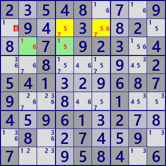

ALS XZ
For analysis algorithms using multiple ALSs,
use RCC(Restricted Common Candidate).
Here are two types of ALS XZ (Singly Linked, Doubly linked).
As a characteristic of the analysis algorithm using ALS,
in many cases, there are many solutions at the same time.
There are other analysis algorithms of the ALS system.
ALS XZ(Singly Linked)
Suppose that two ALSs have RCC(digit x). And, let z be the digit contained in both ALS different from RCC.
digit z outside the ALS and associated with all z in both ALS can be excluded from the candidate.
If z is true, both ALSs are changed to LockedSet, and both ALSs include RCC.
ALS XZ(Doubly Linked)
Suppose that two ALSs have two RCCs (digit x,y).
- digits belonging to the same house as RCC outside ALS can be excluded.
If this is true for one RCC(eg x),
then the two ALSs will be LockedSet and the other RCC(y) will be excluded from both ALS.
- For a element of ALS digited z(different from RCC), z outside the ALS and related to all z in the ALS can be excluded from the candidate. If this is true, that ALS is a LockedSet and two RCCs belong to this ALS. In the other ALS, there are n-1 candidate digits in n cells, and ALS collapses.
Sample of ALS XZ

ALS-XZ (Singly Linked)
ALS1: r2c46 #567
ALS2: r3c24 #156
RCC: #5
 ALS-XZ (Singly Linked)
ALS-XZ (Singly Linked)
ALS1: r1c59 #469
ALS2: r5c2357 #12369
RCC: #6
 ALS-XZ (Doubly Linked)
ALS-XZ (Doubly Linked)
ALS1: r349c3 #1569
ALS2: r1c3459 #12356
RCC: #15
 ALS-XZ (Doubly Linked)
ALS-XZ (Doubly Linked)
ALS1: r25c7 #289
ALS2: r7c89 r89c7 r9c9 #256789
RCC: #28
2.548...9.9..3..2...7.923.4..8.....2541...6879.....1..4.961.2...8..7..9.7...584.6
.2...783..47.2...13..1....7....38.15...5.4...58.79....6....2..82...8.57..793...6.
87........9.81.65....79...8.....67316..5.1..97124.....3...57....57.48.1........74
.9..4..6.4..15...2..6..91....4....7.36.....15.8....3....82..4..9...34..1.4..8..3.